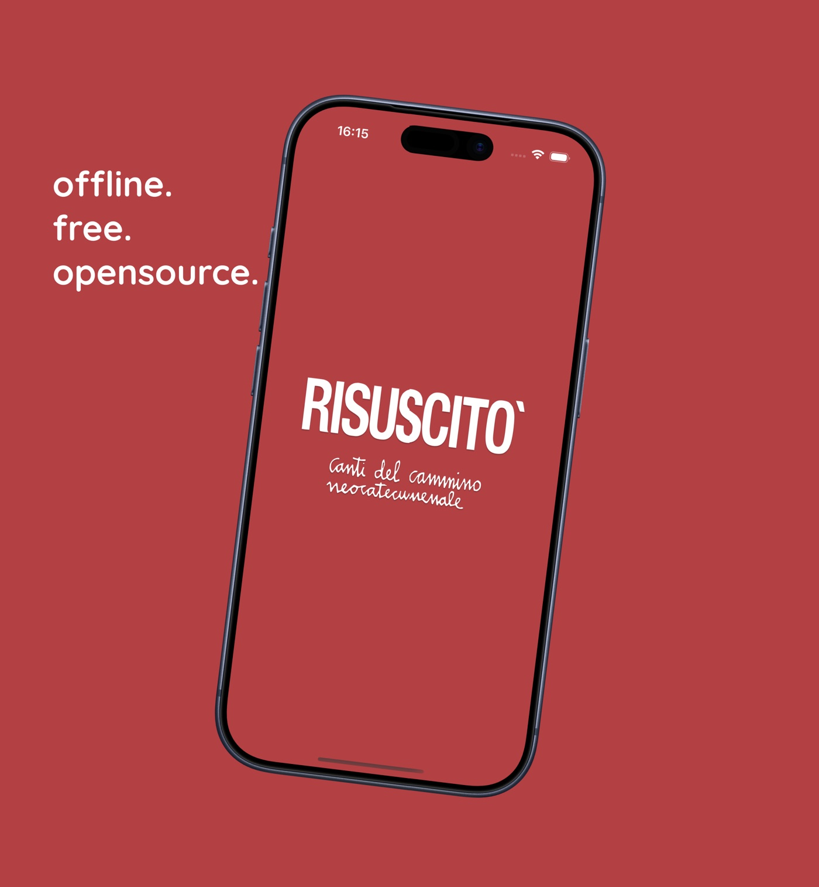

App per iPhone
Risuscitò - Canti del Cammino
Un modo comodo e veloce per consultare, cercare e ascoltare i canti del Cammino Neocatecumenale, direttamente dal tuo iPhone.
Scarica su App Store
Cosa non è
Risuscitò non è un'app ufficiale e non è collegata, approvata o sostenuta dal Cammino Neocatecumenale né dai suoi responsabili.
È un progetto personale, nato per offrire uno strumento comodo e performante per consultare i canti del Cammino in un momento in cui su iOS questo strumento mancava.
Cos'è
Risuscitò raccoglie i canti del Cammino con testo e accordi, e li rende facili da trovare quando servono: durante la preparazione di una celebrazione, in comunità o per suonare.
I canti sono inclusi nell'app, quindi testi e accordi si consultano anche senza connessione. Per ascoltare le registrazioni serve invece una connessione a Internet.
Funzionalità
Ricerca
Trova un canto per titolo, per parole del testo o per riferimento biblico.
Indici
Alfabetico, numerico, biblico e liturgico: tempi liturgici, celebrazione eucaristica e altri canti.
Tonalità e barré
Trasponi gli accordi e scegli il barré: le impostazioni restano salvate per ogni canto.
Ascolto
Ascolta la registrazione del canto, quando disponibile.
Preferiti e cronologia
Salva i canti che usi più spesso e ritrova quelli visti di recente.
Liste personalizzate
Crea le tue liste di canti e organizzale come preferisci.
Prepara una celebrazione
Scegli i canti per la Parola o per l'Eucarestia e condividili su WhatsApp o copiandone il testo.
Quattro lingue
Italiano, inglese, ucraino e turco, con tema chiaro e scuro.
Privacy
Risuscitò non richiede registrazione, non raccoglie dati personali e non contiene pubblicità. Tutti i dettagli sono nella Privacy Policy.
Contatti
Per domande, segnalazioni o suggerimenti scrivi a francescobarsotti02@gmail.com.